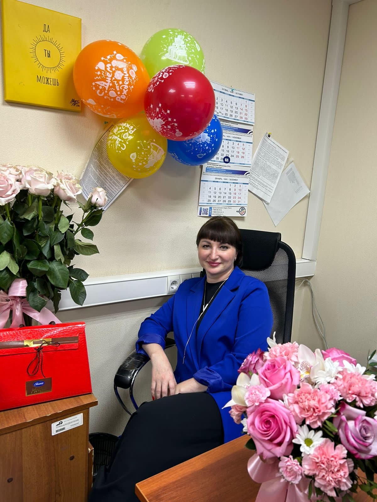

Мой первый сайт-визитка
Про меня
Меня зовут Ольга. Я работаю инженером. Мне интересно изучать новое, много учусь. В этот раз решила изучить верстку сайтов.
Живу в Новом Уренгое - город суровый по климатическим условиям, но привлекателен отзывчивостью жителей.
Чему я хочу научиться
На этом курсе я хотела бы научиться создавать сайты с нуля.